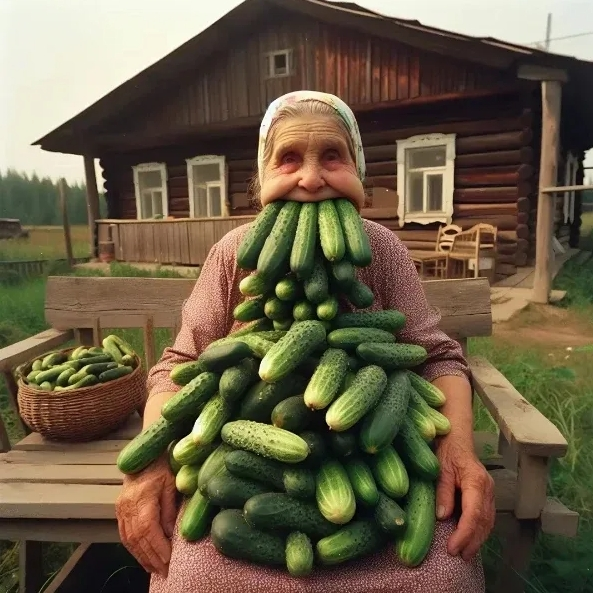

<!DOCTYPE html>
<html lang="ru"></html>
<head>
    <link rel="stylesheet" href="css/style.css">
    <meta charset="UTF-8">
    <meta name="viewport" content="width=device-width, initial-scale=1.0">
    <title>Document</title>
</head>
<body>
    <div id="wrapper">
        <header>
            <a href="index.html" id="logo"><span class="yellow">Сайт</span> <i>визитка</i></a>
        </header>
        <main>
            
            <h1>Бизнес мечты</h1>
            <p>В современном мире, где каждый стремится найти своё призвание, 
                история о магазине огурцов может показаться необычной, но именно
                такие нестандартные идеи часто становятся основой успешного бизнеса. 
                Представьте себе уютное пространство, где на полках красуются свежие, 
                хрустящие огурчики разных сортов, а воздух наполнен ароматом только что 
                сорванных овощей. 
                Всё началось с простой любви к выращиванию растений. 
                Многие предприниматели начинали с небольшой теплицы, 
                где экспериментировали с разными сортами огурцов. Постепенно 
                хобби переросло в серьёзное дело, основанное на страсти к своему делу 
                и желании делиться вкусом натуральных, экологически чистых продуктов с 
                окружающими.
            <p><a href="sound.html">Послушать мою музыку →</a></p>
        </main>
    </div>
    <footer>
        © Воздухан company
    </footer>
</body>
</html>